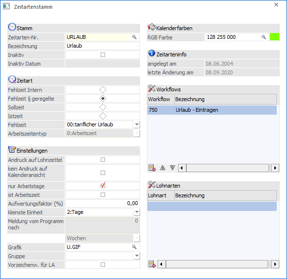
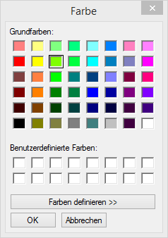
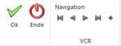

Zeitarten werden für die Verwaltung von Zeiten benötigt. Die Zeitarten werden über den Menüpunkt
1 Stammdaten
1 Mandantenstammdaten
1 Zeitartenstamm
oder - bei entsprechender Berechtigung - im Programm WinLine INFO über den Menüpunkt
1 SMART
1 Stammdaten
1 Zeitartenstamm
angelegt und gewartet.
Die Zeitarten können auch von einem anderen Mandanten bezogen werden. Details dazu entnehmen Sie dem WinLine START-Handbuch, Kapitel "LOHN-Parameter".

Eingabefelder
Ø Zeitarten-Nr.
Eingabe der Zeitartennummer. Das ist ein 20stelliges, alphanumerisches Feld, wo die eindeutige Zuordnung der Fehlzeit getroffen wird.
Ø Bezeichnung
Eingabe der Bezeichnung der Fehlzeit.
Ø Inaktiv
Durch Aktivieren der Checkbox wird die Fehlzeit auf inaktiv gesetzt. Dadurch wird in der nächsten Zeile das Datum, an dem die Fehlzeit auf inaktiv gesetzt wurde, angezeigt.
Zeitart
Ø Typ
Über die Option kann gesteuert werden, um welche Zeitart es sich handelt:
ü Fehlzeit Intern
Das sind
Zeitarten, die dann verwendet werden, wenn ein AN nicht arbeitet, dafür aber
einen internen Grund hat, z.B. Schulungen etc.
ü Fehlzeiten § geregelt
Diese
Zeitarten sind gesetzlich bzw. kollektivvertraglich geregelt (z.B. Urlaub,
Krankenstand etc.)
ü Sollzeit
Mit dieser Zeitart
können die geplanten Arbeitszeiten erfasst werden
ü Istzeit
Mit dieser Zeitart
können effektive Arbeitszeiten erfasst werden.
Wird die Option "Fehlzeiten § geregelt" verwendet, dann kann aus der Auswahllistbox "Fehlzeit" die entsprechende Fehlzeit ausgewählt werden. Dabei stehen folgende Möglichkeiten zur Verfügung:
ü 00:tariflicher Urlaub
ü 01:unbezahlter Urlaub
ü 02:Arztbesuch
ü 03:Behördenweg
ü 04:Hochzeit
ü 05:Begräbnis
ü 06:Umzug
ü 07:Präsenzdienst
ü 08:Pflegeurlaub
ü 09:Krank
ü 10:Geburt eines Kindes
ü 11:Arbeitsunfall
ü 12:Arbeitssuche
Ø Arbeitszeitentyp
Diese Option steht nur dann zur Verfügung, wenn die Zeitart auf Istzeit gestellt ist. Dabei können folgende Optionen gewählt werden:
ü Arbeitszeit
Bei der Zeitart
handelt es sich um eine "normale" Arbeitszeit.
ü Homeoffice
Bei der Zeitart
handelt es sich um eine "Homeoffice"-Arbeitszeit. Dieser Arbeitszeittyp wird in
weiterer Folge dafür verwendet, um auswerten zu können, wie viele Tage der AN im
HomeOffice gearbeitet hat.
Einstellungen
Ø Andruck auf Lohnzettel
Ist diese Option aktiviert, dann wird die Zeitart am Abrechnungsbeleg in einer eigenen Rubrik angedruckt (sofern der Abrechnungsbeleg entsprechend eingerichtet ist).
Ø Kein Andruck auf Kalenderansicht
Mit dieser Option kann gesteuert werden, ob die Zeitart in der Kalenderansicht (AN-Stamm, Zeiterf.) angedruckt werden soll oder nicht.
Ø Nur Arbeitstage
Mit dieser Option wird bestimmt, dass bei dieser Zeitart nur ganze Arbeitstage hinterlegt werden können - es ist nicht möglich, nur eine bestimmte Anzahl von Stunden zu erfassen.
Ø ist Arbeitszeit
Mit dieser Option kann gesteuert werden, ob die verwendete Zeitart auch als Arbeitszeit gerechnet werden soll.
Ø Aufwertungsfaktor (%)
Hier kann der Prozentwert eingegeben werden, mit dem die erfasste Zeit multipliziert wird (z.B. bei 100%igen Zuschlägen bei Wochenend- oder Feiertagsarbeitszeiten).
Ø Kleinste Einheit
Aus der Auswahllistbox kann gewählt werden, in welcher Einheit die Fehlzeit zumindest erfasst werden soll. Dabei stehen die Optionen
ü Minuten
ü Stunden
ü Tage
ü 1/2er Tag
zur Verfügung. Standardmäßig wird die Option "Tage" vorgeschlagen.
Achtung:
Für die gesetzlichen Fehlzeiten werden im Programm automatisch Werte mit den Einheiten mitgeführt. Es sollte also darauf geachtet werden, dass Fehlzeiten mit gleichen Fehlzeitencodes auch gleiche "kleinste Einheiten" hinterlegt haben.
Ø Meldung vom Programm nach
Hier kann eingestellt werden, nach welchem Zeitraum (Anzahl und Intervall, wobei beim Intervall zwischen Tagen und Wochen gewählt werden kann), nach dem eine Meldung vom Programm erfolgen soll (diese Funktion wird derzeit nicht unterstützt).
Ø Grafik:
Hier kann eine Grafik hinterlegt werden, die bei der Jahresansicht der Fehlzeitenübersicht dargestellt werden soll. Über die Matchcodefunktion kann nach allen vorhandenen Grafiken gesucht werden. Wird in der Fehlzeit keine Grafik hinterlegt, dann wird in der Jahresansicht nur ein X angezeigt.
Ø Gruppe
Wenn über den Menüpunkt
1 Stammdaten
1 Mandantenstammdaten
1 Zeitartengrupppen
Zeitartengruppen definiert wurden, kann über die Auswahllistbox eine Zuordnung getroffen werden.
Ø Vorzeichenw. für LA
Mit dieser Option (wird derzeit noch nicht unterstützt) kann gesteuert werden, ob die Werte wie erfasst oder mit einem negativen Vorzeichen weiterverarbeitet werden sollen.
Ø Kalenderfarben
Über die Matchcodefunktion kann das Farben-Fenster geöffnet werden

aus dem dann eine Farbe gewählt werden kann, die in weiterer Folge zum Andruck in diversen Auswertungen Verwendung findet. Alternativ kann eine Farbe in RGB-Codierung eingegeben werden (der Wert wird nach der Übernahme aus dem Farbe-Fenster auch so dargestellt).
Ø Datum der
Anlage
Datum der letzten Änderung
Hier wird das Datum der Anlage der Fehlzeit bzw. das Datum der letzten Änderung angezeigt.
Ø Workflows
In der Tabelle können die Workflows eingetragen werden, bei denen eine Erfassungszeile mit der Zeitart geschrieben werden soll (z.B. soll eine Erfassungszeile "URLAUB" geschrieben werden, wenn der Urlaubsworkflow "genehmigt" wurde). Im entsprechenden Workflow sollte demnach dann auch eine Folgeaktion "Zeiteintrag schreiben" hinterlegt sein.
Ø Lohnarten
In der Tabelle können Lohnarten hinterlegt werden, die für die Übergabe aus der Zeiterfassung an den WinLine LOHN verwendet werden sollen. Diese Funktion wird derzeit noch nicht unterstützt (die Übergabe).
Buttons

Ø OK
Mittels OK Button kann der Datensatz gespeichert werden
Ø Ende
Durch Drücken des Ende Buttons oder der ESC-Taste wird das Fenster geschlossen.
Ø Navigation
Über die sogenannte VCR-Buttonleiste kann durch Mausklick zwischen den Datensätzen geblättert werden. Damit auf diese Weise auch Daten kontrolliert und geändert werden können, kann mit der Tastenkombination SHIFT + F5 eine Zwischenspeicherung der Daten (Daten werden gespeichert, der Inhalt in den Masken bleibt bestehen, und auch der Focus bleibt im letzten veränderten Feld stehen) durchgeführt werden.
 Damit kann der
erste Datensatz angesprochen werden (Tastatur: STRG SHIFT POS1).
Damit kann der
erste Datensatz angesprochen werden (Tastatur: STRG SHIFT POS1).
 Damit kann der
vorherige Datensatz angesprochen werden (Tastatur: SHIFT -).
Damit kann der
vorherige Datensatz angesprochen werden (Tastatur: SHIFT -).
 Damit kann der
nächste Datensatz angesprochen werden (Tastatur: SHIFT +).
Damit kann der
nächste Datensatz angesprochen werden (Tastatur: SHIFT +).
 Damit kann der
letzte Datensatz angesprochen werden (Tastatur: STRG SHIFT ENDE).
Damit kann der
letzte Datensatz angesprochen werden (Tastatur: STRG SHIFT ENDE).
 Damit wird die
nächste freie Nummer für die Neuanlage gesucht (Tastatur: +).
Damit wird die
nächste freie Nummer für die Neuanlage gesucht (Tastatur: +).